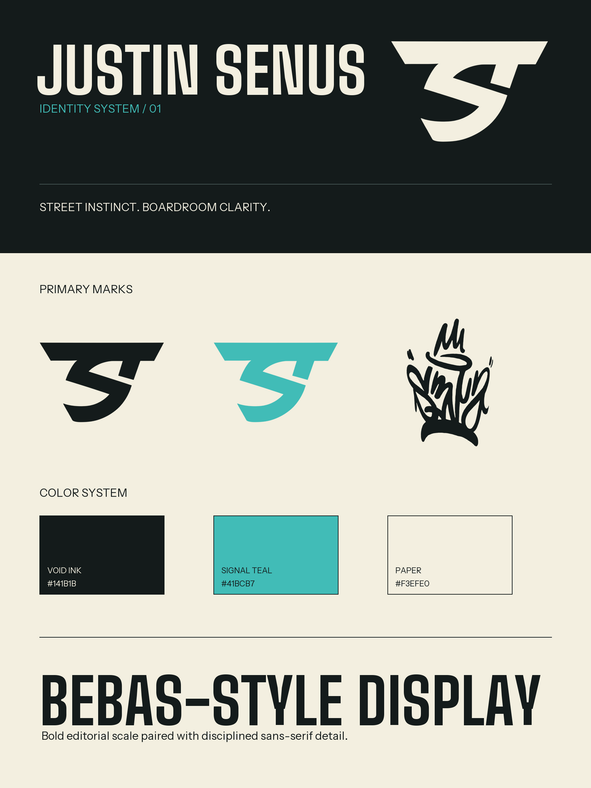
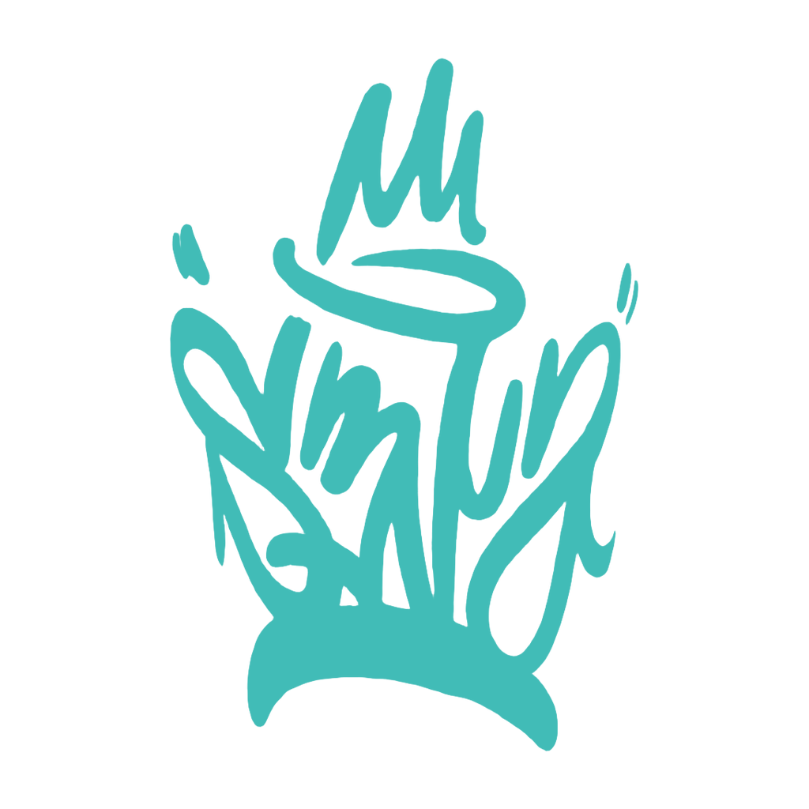
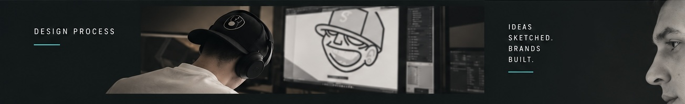
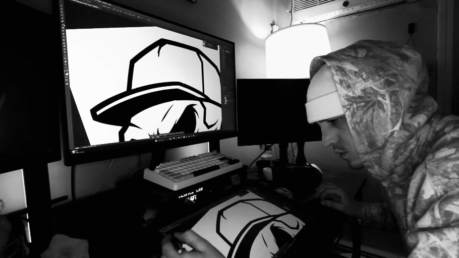
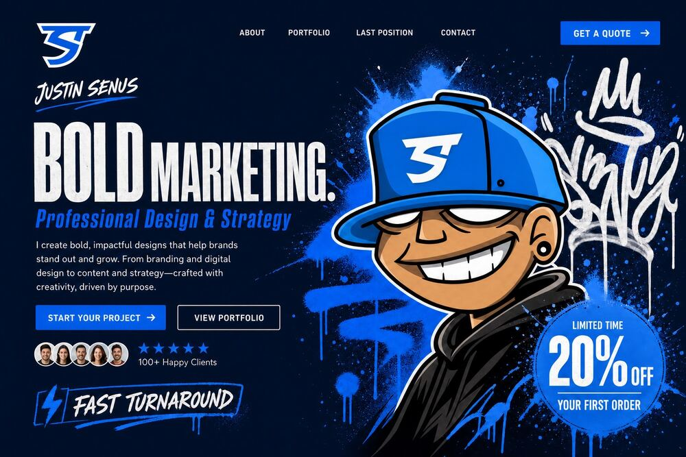

01 / Identity system
Signal & Structure
Brand direction, mark usage, color, typography, and the rules that let expressive work stay clear.
Personal brand system / active
Street instinct. Boardroom clarity.
Let’s talkDesign process

02 Portfolio / Experience
A working view of the systems, campaigns, and decisions behind the work. Project details can be expanded as case-study material is added.

01 / Identity system
Brand direction, mark usage, color, typography, and the rules that let expressive work stay clear.
Personal brand system / active
Process / 0202 / Creative process
Hands-on making, sharper decisions, and a clear path from first instinct to finished system.
Design process / supporting visual
Energy / 0303 / Creative energy
A sharper visual voice for work that has to be remembered without losing the plot.
Case-study image / details to be addedMore selected work can be added here as project stories are finalized.
Experience / The through-line
Design, marketing, and creative direction have never lived in separate rooms. This is the working history behind the practice.
Marketing Lead / Sales Support
Led in-house brand, marketing, proposals, case studies, sales presentations, events, digital content, and partner campaigns across a technical security organization.
Graphic Designer / Marketing
Owned design and marketing across multiple dealerships, building campaigns and day-to-day communications for a distributed business.
Graphic Designer
Built the practical foundation: moving between visual design, production, and the realities of marketing work.
Design Consultant
A focused practice for brand direction, identity systems, creative leadership, and the work that connects them.
Dates, project outcomes, and supporting work samples can be added as the portfolio is finalized.
03 Approach / What I do
01
Find the point of view, voice, and visual direction that gives a brand a clear place to stand.
02
Build marks, typography, color, and rules that stay recognizable across every necessary touchpoint.
03
Keep the work moving from first idea to final file with a strong creative point of view and practical follow-through.
04 About / The person behind the work
I’m a graphic designer originally from Rhode Island with a passion for building bold, modern, and impactful visual identities. My creativity started early—constantly sketching, illustrating, and refining ideas by hand—but discovering digital design changed the way I created.
After teaching myself Adobe Illustrator and Photoshop, I became drawn to the power of combining creativity with technology. Over the past 9+ years working professionally in design and marketing, I’ve continued to strengthen my skills in branding, digital design, content creation, and creative strategy.
Creative energy.
Strategic impact.
05 Contact / Start a conversation
Have a brand that needs a stronger point of view, a system that needs structure, or a team that needs creative direction?
jsenus4196@gmail.comFor collaborations, design leadership, and work that needs both instinct and clarity.